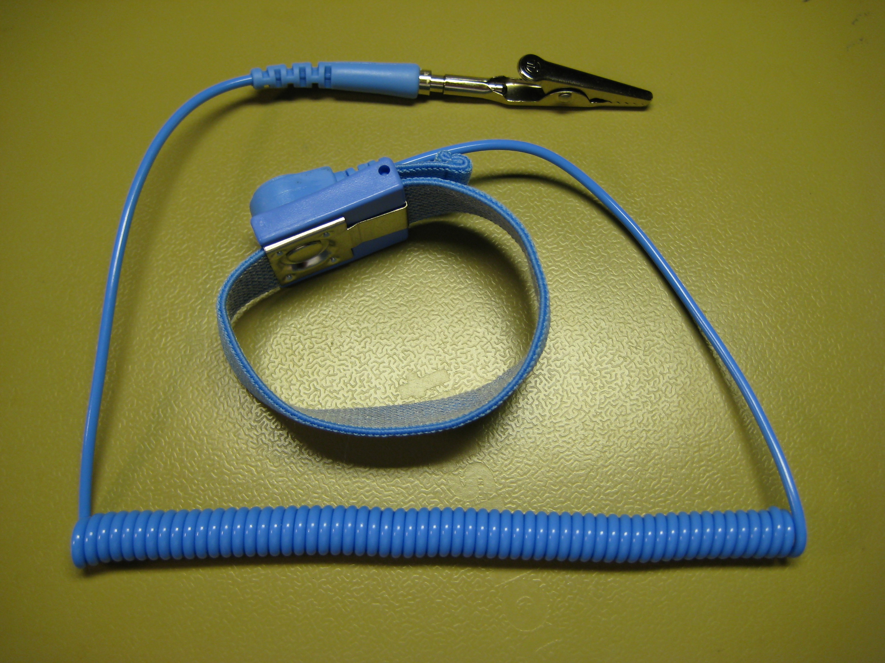
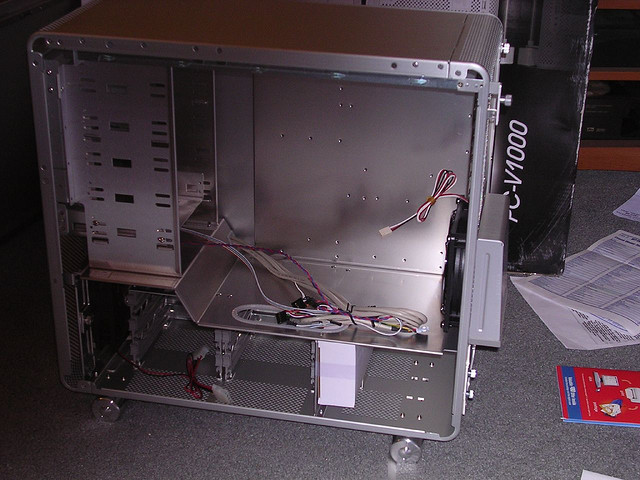
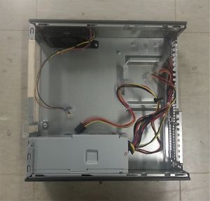
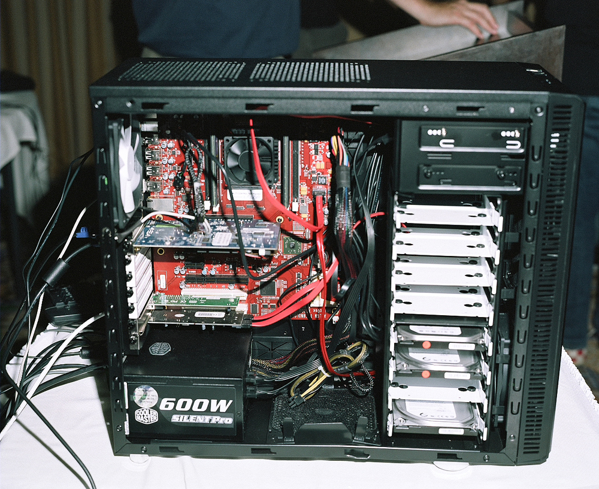

How to build a Gaming computer!
Computers are made up of about 5 nessessary components and are easy enough to build if you know what you're doing. Though follow the right steps and it should be just as simple, regardless of how much you know about computers.
Listed below are components that make up the 'average' gaming computer. Not all of these components are nessessary, though they are the basis of what makes up a standard-to-good gaming computer...
- Case
- Graphics Processing Unit (GPU)
- Central Processing Unit (CPU)
- Memory
- Power Supply Unit (PSU)
- MotherBoard
- Storage
- Operating System
- Network card (optional)
- Tool kit (optional, though a screw driver may be needed depending on the case)
Before purchasing any of these components you must make sure that they are all compatible. There are hundreds of companies making computer components and not all of them are compatible.
This website does tell you if your components are compatible, though it is not a shop, only a 'middle man'. E.g. you build the computer on that site and then when it comes to buying the parts it will redirect you to other shops that sell that item.
Go to top
Building a computer can be a complicated and confusing procedure for somebody that is not very 'tech savvy', but don't worry, it's not as confusing as it may seem. Following a good tutorial will help make the process of building a computer a whole lot easier.
Now some computer components can be affected by static electricity and become damaged if they come in contact with it, so make sure that when building computers you keep earthed when handling the components.
You can keep yourself earthed by buying one of these and attaching it to the computer case while you build, this keeps you at the same static charge as the case. Or you can just touch the computer case every now and then, like before touching a sensitive component, as this too keeps you earthed. But if you find yourself worring about damaging parts I'd advise just buying a wrist strap.

When building the computer, don't sit on the carpet and do it, as the carpet causes a lot of static electricity. Build the computer on a table or floor that isn't carpeted.
Also parts of some of the components should not be touched, this would be the Underside (computer chip part) of a Hard Drive, anything but the sides of the CPU, the computer chip part of the GPU and try to avoid touching the MotherBoard too much, as this can damage it over time.
Go to top
When building a computer you don't want to get all of the components out straight away and just have it lying around, as that makes it a lot more difficult to build the computer.
So the first components that you will need are, the MotherBoard, CPU, Case, RAM and PSU
Unscrew one of the sides,(this may be easier if you lay the case down on one side) most cases come with thumb screws that you can undo with your hands. Remove the side that you unscrewed.

It should now look a little like the image above.
Go to top
Now Find the PSU and place it in the case, so that the plug on the back of the PSU lines up with the plug on the back of the case.
You may have to then screw this in place.

It should not look a bit like the image above.
Go to top
Now Find the PSU and place it in the case, so that the plug on the back of the PSU lines up with the plug on the back of the case.
Get the MotherBoard, but be careful not touche the board, hold it by the sides.
Put this into the case so that the ports on the motherboard line up with the ports on the case. You will then have to screw this in place.
You can now go ahead and plug one of the power leads from the PSU into the MotherBoard.
Go to top
Take the RAM, holding it by the sides, and plug the RAM into the RAM slots on the MotherBoard. You may have to read your motherboards manual as some motherboard require the RAM in every other slot, so if you have 2 pieces of RAM they would not go next to each other.
Put on the corners of the RAM whilst flicking up the locks on either side to secure the RAM in place.
Go to top
Now in the middle of the MotherBoard the will be a metal lock over a piece of plastic. Take the plastic out.
Now carefully take the CPU and lower it slowly into where you took the plastic place holder. Then secure the lock in place.
You should also have a heatsink that came with the CPU, this has to be plugged into the slots around the CPU, and locked in place, also lowering the thermal paste on the heatsink onto the CPU.
Go to top
Now get the Hark drive and slide it into of the hard drive bays, this may need screwing in.
Now take a power lead from the PSU and plug it into the HDD.
Go to top
Unpack the GPU and carefully plug it into the GPU slot on the motherboard, you may need to screw this in.
You can now plug the PSU into the GPU
Go to top
Some cases have Solid state bays that you can slide the SSD into, if there isn't one just screw it into a HDD bay.
You can then plug this into the PSU.
Go to top
Now plug the Network card into it's slot. This is usually next to the GPU slot, this may also need to be screwed in.
Go to top
You not have to plug everything into the motherboard. You do this with SATA cables. Take the cables and plug them into the motherboards SATA slots.
Now take the other ends and plug one into the HDD and one into the SDD.
Go to top
The case will have some plugs that need to be put into their corresponding sockets on the motherboard. So just locate those and plug them in.
Also go ahead and take the fan and place it on top of the heatsink, it should click in. Plug this into it's corresponding port too.

It should not look a little like this.
Go to top
Screw the side of the case back on and it should be done.
Plug all the cables into the back, e.g. the power cord,keyboard, mouse, etc.
Turn on the computer and install the operating system.
Go to top
Go to top